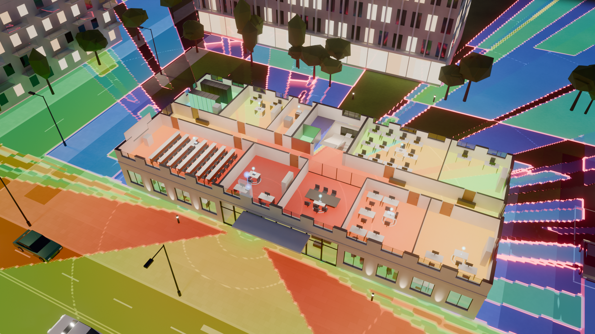
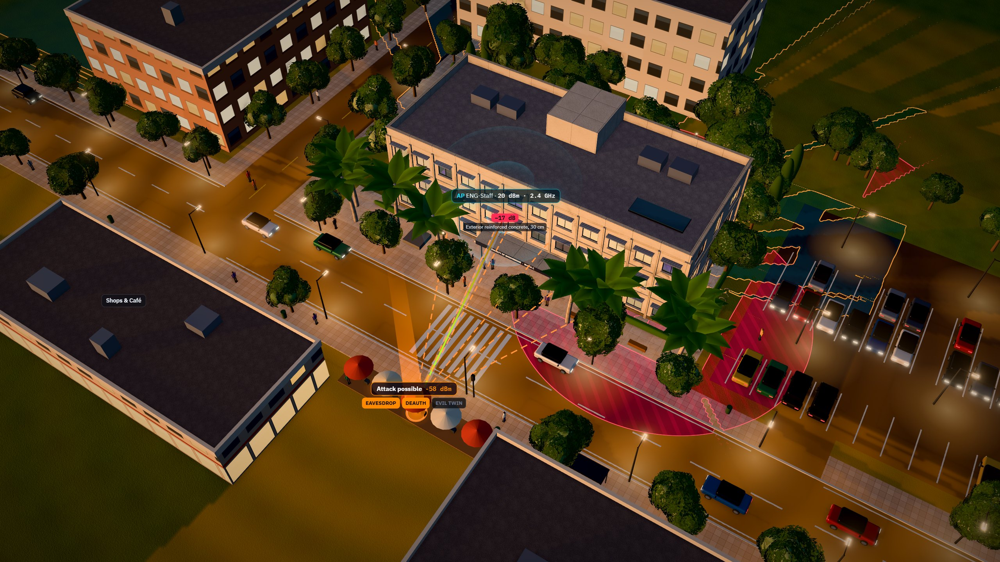
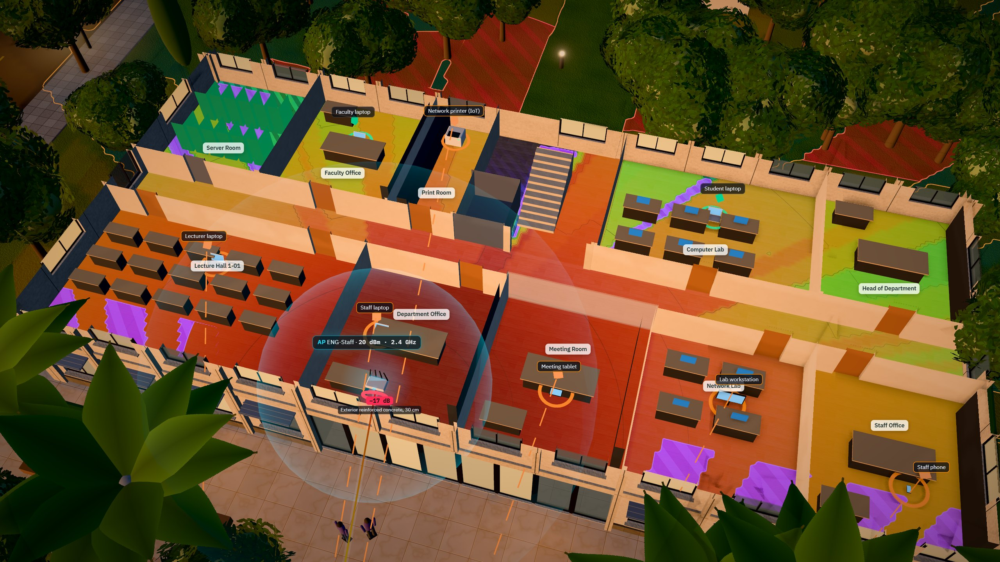
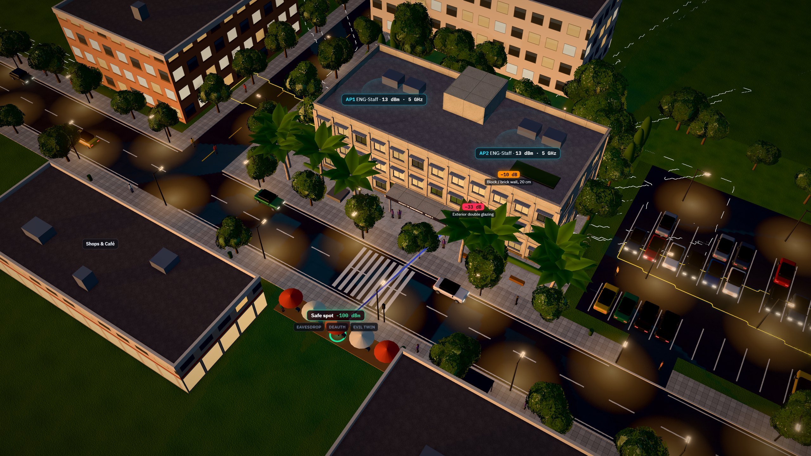
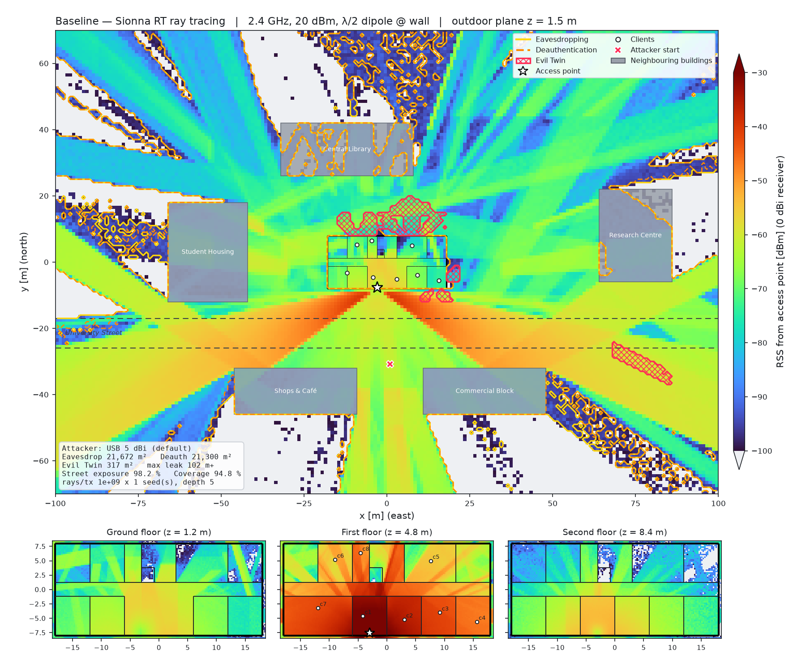
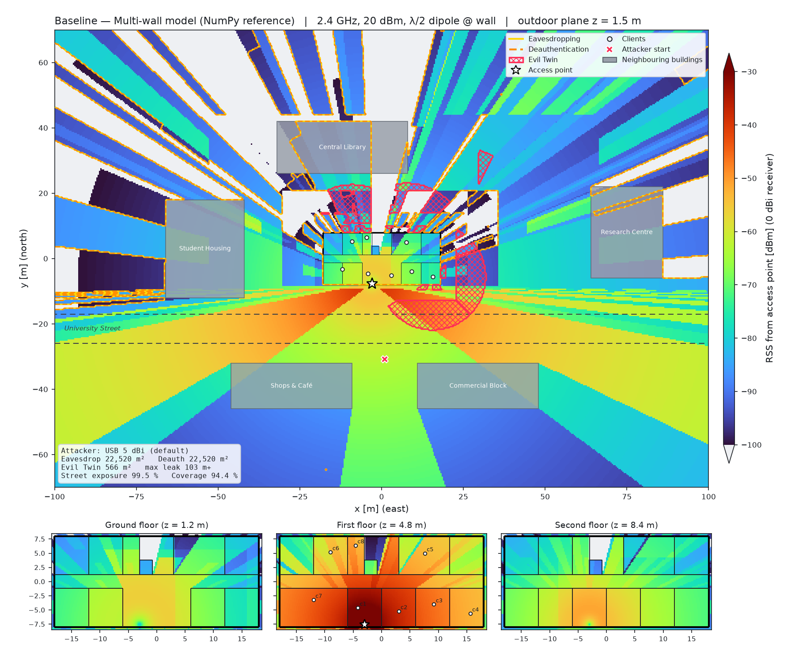
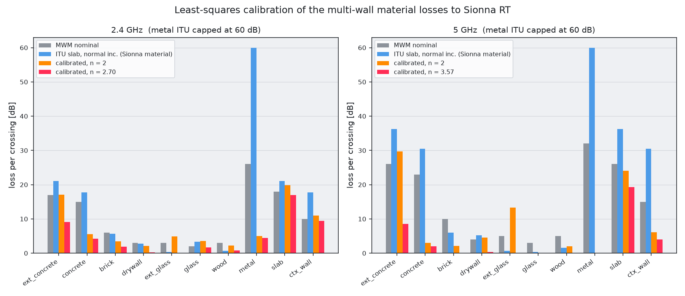

![]()
Wi-Fi does not stop at the walls of a building, so the security of a wireless network depends not only on how an attack works but on where an attacker can stand to launch it. This project builds a three-dimensional digital twin of a three-storey faculty building with its street, café, parking lot and neighbouring buildings, simulates the propagation of the access point’s signal through walls, windows, doors and floor slabs, and converts the received power into a map of the attack surface: the outdoor area from which passive eavesdropping, deauthentication or an Evil-Twin rogue access point is feasible. A real-time COST-231 multi-wall model with three-dimensional wall/opening/slab intersection and antenna patterns runs on the GPU (≈ 222,175 map cells in about 6 ms) and is verified against independent CPU and Python implementations; NVIDIA Sionna RT ray tracing of the same geometry serves as the physics reference. In the baseline configuration (one access point next to a street window, 20 dBm, 2.4 GHz) an attacker with a USB adapter can eavesdrop on 22,520 m² of the 200 m × 140 m study area, including 99 % of the street; from the café across the street he receives -57.7 dBm, a margin of 34.3 dB. No single countermeasure closes the leak and several of them reduce indoor coverage. A combination of RF-shielding film and paint, two ceiling micro-cells, the 5 GHz band and an automatically tuned transmit power of 14 dBm reduces the danger zone to 282 m² (−99 %), removes the street from it entirely and keeps 95.9 % indoor coverage. Ray tracing confirms the baseline finding but shows that reflections make several protections markedly less effective than the engineering model predicts — ray-traced with Sionna RT, the same configuration leaves 2,691 m² (−88 % relative to the ray-traced baseline) and 18 % of the street exposed — which is why the protocol layer (802.11w, WPA3-SAE) remains necessary.
Most coursework on wireless security studies an attack itself — how a WPA2 handshake is captured, how forged deauthentication frames disconnect a client, how a rogue access point lures victims. The question this project asks is complementary and spatial: from where can these attacks be launched? A Wi-Fi access point radiates in all directions; walls attenuate the signal but rarely stop it, and a street, a café or a parking lot next to an office building can receive the network at levels that are perfectly usable for an attacker. The physical extent of this exposure — the wireless attack surface — is invisible to administrators and to users.
The project makes it visible with a digital twin: a three-dimensional model of a building and its surroundings in which the propagation of the signal is simulated and translated, cell by cell, into the attacks that are feasible there. The contributions are:
In free space the received power falls with the square of the distance; the free-space path loss at 1 m is 20·log₁₀ f + 32.44 dB (f in GHz), i.e. 40.0 dB at 2.4 GHz and 46.4 dB at 5 GHz. Inside and around buildings the dominant additional effect is the attenuation of the walls and floors that the signal must cross. The COST-231 multi-wall model [1] adds the loss of every crossed wall and floor to the free-space loss; it is the standard engineering model for WLAN planning and underlies ITU-R P.1238 [2]. The losses of individual building materials depend on their permittivity, conductivity and thickness and increase with frequency; ITU-R P.2040 [3] tabulates the electrical properties. Real propagation also includes reflection, diffraction and scattering, which a ray tracer such as NVIDIA Sionna RT [5] models explicitly.
Radio-layer measures change where an attack is possible: lower transmit power, directional antennas, placement of the access point away from the façade, RF-shielding window films and conductive paints, and the 5 GHz band, which loses more in walls and in free space. Protocol-layer measures change what an attacker can do: 802.11w protects management frames, WPA3-SAE removes offline dictionary attacks on captured handshakes and prevents a clone without the password from completing the handshake [6].
All engines read one data file, data/building.json, generated by a small script. It contains the geometry (floors, walls with their three-dimensional extent and openings, rooms, neighbouring buildings, the site), the radio parameters (material losses per band, access-point mounts and antennas, client devices) and the security parameters (attacker equipment, thresholds, protections and pre-defined scenarios).
The building is a 36 m × 16 m faculty block with three storeys of 3.6 m. A double-loaded corridor separates street-facing rooms in the south from the north rooms and a concrete stair-and-elevator core. Exterior walls are 30 cm reinforced concrete with a regular pattern of double-glazed windows (one 1.8 m window per 3 m bay); the ground-floor lobby has a glass curtain wall. Corridor walls are 20 cm blocks with wooden doors, partitions are drywall, the elevator shaft and the server-room door are steel. The department’s access point hangs on the first floor next to a window that faces University Street; eight client devices (laptops, phones, a lab workstation, a network printer) are placed in the rooms. The site includes the street with a zebra crossing, sidewalks, a café terrace across the street, a parking lot and five neighbouring buildings, whose façades also attenuate the signal.

| Material | Thickness | ITU-R P.2040 type | Loss 2.4 GHz | Loss 5 GHz |
|---|---|---|---|---|
| Exterior reinforced concrete, 30 cm | 30.0 cm | concrete | 17 dB | 26 dB |
| Concrete core / shear wall, 25 cm | 25.0 cm | concrete | 15 dB | 23 dB |
| Block / brick wall, 20 cm | 20.0 cm | brick | 6 dB | 10 dB |
| Gypsum drywall partition | 12.0 cm | plasterboard | 3 dB | 4 dB |
| Exterior double glazing | 2.4 cm | glass | 3 dB | 5 dB |
| Interior glass partition | 1.2 cm | glass | 2 dB | 3 dB |
| Wooden door | 4.5 cm | wood | 3 dB | 5 dB |
| Steel (elevator shaft, server-room door) | 0.3 cm | metal | 26 dB | 32 dB |
| Reinforced concrete floor slab, 30 cm | 30.0 cm | concrete | 18 dB | 26 dB |
| Neighbouring façade (effective) | 25.0 cm | concrete | 10 dB | 15 dB |
Table 1. Through-wall losses (normal incidence) used by the real-time model — typical WLAN-planning values consistent with ITU-R P.2040; they are calibrated against Sionna RT in section 9.
The received signal strength from a transmitter T at a receiver R is
Wall crossings in three dimensions. Each wall is a vertical rectangle defined by a plan segment and a height range. The plan projection of the ray T→R is intersected with the segment; for a crossing the height of the ray at that point is interpolated and compared with the wall’s height range, so a ray from the first floor to the street crosses only the walls of the storeys it actually passes through. If the crossing point lies inside an opening (a window, a door or the curtain wall — described by sill, head, width, offset and an optional period), the opening’s material is used instead of the wall’s. Floor slabs are crossed when the ray passes a slab plane inside the building footprint. Because the geometry and the map grids lie on a regular lattice, rays can pass exactly through wall junctions or opening edges; all boundary tests therefore use small symmetric tolerances (10⁻⁵ in the line parameters, 0.1 mm in lengths), which makes the float32 GPU and float64 CPU implementations decide every such case identically.
Antennas. The default access-point antenna is a vertical half-wave dipole, G = 2.15 + 10·log₁₀[cos(π/2·sin el)/cos el]² dBi. The directional option is the 3GPP TR 38.901 element pattern [4], G = Gmax − min(12(φ′/φ3dB)² + 12(θ′/θ3dB)², SLA) in the antenna’s local frame (8 dBi, 65°, 30 dB for the wall mount; a 5.5 dBi, 110° ceiling panel for the ceiling mount). Receivers are isotropic; the attacker’s antenna gain is added as if it were pointed at the target. With several access points, every receiver uses the strongest one.
Maps. The model is evaluated on an outdoor plane of 200 m × 140 m at 1.5 m (hand height, 0.4 m cells) and on one plane per storey at 1.2 m above the floor (0.2 m cells).
For an attacker standing at X with antenna gain Gatt, receiver sensitivity Satt and transmit power Patt (Table 2), and for the client devices c:
| Attacker equipment | Antenna gain | Sensitivity | TX power |
|---|---|---|---|
| Smartphone | 0 dBi | -85 dBm | 15 dBm |
| USB adapter + 5 dBi antenna | 5 dBi | -92 dBm | 27 dBm |
| Yagi directional, 15 dBi | 15 dBi | -92 dBm | 27 dBm |
Table 2. Attacker equipment. The default analysis uses the USB adapter with a 5 dBi antenna.
From the maps the twin derives four indicators: the danger zone (outdoor area outside the building where at least one attack is feasible), the maximum leak distance from the building, the street exposure (share of the street and its sidewalks inside the eavesdropping zone) and the indoor coverage on the access point’s floor (share of cells, excluding the stair core, with at least −67 dBm, the usual requirement for voice-grade Wi-Fi). For the attacker’s current position the twin additionally shows the hijack map: the cells inside the building where a client would prefer the attacker’s rogue access point.
The interactive twin is a browser application (three.js, WebGL 2) built into a single self-contained HTML file that runs offline. The propagation model is implemented as a fragment shader: each fragment of a floating-point render target is one map cell, the 165 walls are stored in a data texture, and every outdoor cell evaluates the path from the access point(s) and from the eight clients (for the deauthentication and Evil-Twin channels) — about 222,175 cells per update in 5.9 ms on an NVIDIA GeForce RTX 3060 (WebGL 2 via Direct3D 11). The results are read back asynchronously for the indicators and morphed smoothly on screen when a protection is toggled. The attacker can be dragged or walked with the keyboard; his link budget, the ray to the access point with the loss of every crossed wall, and the status of each client are updated continuously. A guided demonstration mode, Arabic and English interfaces and several lighting moods support the presentation.
Verification. The model is implemented three times — GLSL on the GPU, JavaScript for single links and statistics, and NumPy as the batch reference — following one written specification. The automated checks (script web/tools/measure.mjs) give:

With the access point next to the street window, essentially the whole 200 m × 140 m study area lies inside the eavesdropping zone of a USB adapter; the zone is only interrupted behind the neighbouring buildings. The Evil-Twin zone (566 m²) covers the plaza in front of the façade and part of the parking lot, where a rogue access point is received more strongly than the real one by devices near the windows. The link budget of an attacker on the café terrace explains why: a single wall separates him from the access point.
| AP transmit power | +20.0 dBm |
| AP antenna gain towards the attacker (half-wave dipole) | +1.94 dBi |
| Free-space path loss over 24.0 m | −67.64 dB |
| Exterior reinforced concrete, 30 cm | −17.0 dB |
| Attacker antenna (USB adapter) | +5.0 dBi |
| Received power | -57.7 dBm |
| Adapter sensitivity | −92.0 dBm |
| Eavesdropping margin | +34.3 dB |
Table 3. Link budget from the access point to the café terrace.

| Configuration | TX | Band | Danger zone | Δ | Evil Twin zone | Street exp. | Max leak | Coverage |
|---|---|---|---|---|---|---|---|---|
| Baseline | 20 dBm | 2.4 GHz | 22,520 m² | 566 m² | 99.5 % | > 100 m | 94.4 % | |
| Reduced TX power | 12 dBm | 2.4 GHz | 16,490 m² | −27 % | 3,493 m² | 99.5 % | > 100 m | 82.1 % |
| Directional antenna | 20 dBm | 2.4 GHz | 15,452 m² | −31 % | 6,470 m² | 91.9 % | > 100 m | 88.5 % |
| Relocated AP | 20 dBm | 2.4 GHz | 18,202 m² | −19 % | 6,379 m² | 97.9 % | > 100 m | 81.2 % |
| Two ceiling micro-cells | 20 dBm | 2.4 GHz | 25,266 m² | +12 % | 60 m² | 98.2 % | > 100 m | 100.0 % |
| Shielding window film | 20 dBm | 2.4 GHz | 16,793 m² | −25 % | 463 m² | 96.9 % | > 100 m | 94.4 % |
| Shielding paint | 20 dBm | 2.4 GHz | 13,623 m² | −40 % | 25 m² | 95.6 % | > 100 m | 94.4 % |
| 5 GHz band | 20 dBm | 5 GHz | 9,378 m² | −58 % | 8 m² | 95.0 % | > 100 m | 70.1 % |
| Combined RF measures | 20 dBm | 5 GHz | 815 m² | −96 % | 0 m² | 9.6 % | 59.8 m | 68.3 % |
| “Apply protection” (all combined) | 14 dBm | 5 GHz | 282 m² | −99 % | 0 m² | 0.0 % | 38.6 m | 95.9 % |
Table 4. Indicators of each configuration (real-time model, USB attacker). Δ = change of the danger zone relative to the baseline.
No individual measure comes close to closing the street. Shielding the façade helps where it is applied, but the zone remains far larger than the study area in most directions; the 5 GHz band has the largest single effect because both the free-space loss and every wall loss increase. Several measures reduce indoor coverage: a lower transmit power, a single access point relocated behind the concrete core, and 5 GHz all fall far below the 95 % target. Two ceiling micro-cells at full power cover the whole floor but radiate more energy and enlarge the danger zone. The directional antenna aimed away from the street shrinks the zone but leaves the ends of the floor in its weak side lobes.
Because the received power is linear in the transmit power (in dB), the minimum power that keeps 95 % of the floor above −67 dBm follows directly from the 5th percentile p₅ of the floor map computed at the current power P: Pmin = P + (−67 − p₅) + 0.5 dB. On 5 GHz a single access point cannot reach the target from any ceiling position (best of a GPU search over 60 positions: 79 %), so the design moves to two micro-cells. A GPU search over 450 placements selected two corridor-ceiling positions at x = −12 m and x = +9 m (99.5 % at 20 dBm), after which the optimiser reduces the power to 14 dBm.

The combination is effective because its parts complement each other: shielding raises the loss of the façade, micro-cells create coverage headroom indoors, 5 GHz increases every loss, and the optimiser converts the headroom into a lower transmit power. The remaining eavesdropping zone is a narrow band around the building; no deauthentication or Evil-Twin cells remain. Ray-traced with Sionna RT, the same configuration leaves 2,691 m² (−88 % relative to the ray-traced baseline) and 18 % of the street exposed (section 9): the real-time model is optimistic, and the protocol layer covers the remaining margin.
| Attack | RF measures | 802.11w PMF | WPA3-SAE |
|---|---|---|---|
| Eavesdropping | zone −99 % | no effect | only encrypted frames remain |
| Offline password cracking | fewer places to capture the handshake | no effect | blocked (SAE resists dictionary attacks) |
| Deauthentication | zone removed | blocked (forged frames rejected) | PMF is mandatory in WPA3 |
| Evil Twin | rogue AP cannot out-shout the real one | no forced disconnects | blocked (a clone cannot complete SAE) |
Radio measures limit where an attack can be launched; protocol measures limit what it can achieve inside the area that is left. Neither is sufficient alone — section 9 shows why this matters.
Setup. The same building was ray-traced with sionna-rt 2.2.0 (Mitsuba 3.9.1, Dr.Jit 1.5.0, variant cuda_ad_mono_polarized, NVIDIA GeForce RTX 3060, 616.64). Walls are zero-thickness quads carrying ITU-R P.2040 single-slab materials with the wall’s thickness (closed boxes would apply the slab transmission twice); openings are split into separate quads of glass or wood; slabs, a ground plane and the neighbouring buildings are included; the shielding measures are modelled as conductive layers whose normal-incidence loss matches Table 1 plus the specified increase. The radio maps use 1,000,000,000 rays per transmitter, a maximum depth of 5 interactions, line of sight, specular reflection and refraction (transmission through walls); diffuse scattering and diffraction are disabled. The client-to-attacker maps needed for the deauthentication and Evil-Twin conditions are traced with the clients as sources (reciprocity).


| Scenario | outdoor RMSE / bias | floor0 RMSE / bias | floor1 RMSE / bias | floor2 RMSE / bias | floors RMSE / bias | all RMSE / bias |
|---|---|---|---|---|---|---|
| Baseline | 12.8 / -2.5 dB | 7.1 / -1.5 dB | 7.2 / -2.9 dB | 6.6 / 2.5 dB | 7.0 / -0.7 dB | 10.2 / -1.6 dB |
| Reduced TX power | 12.2 / -2.7 dB | 6.0 / -1.2 dB | 7.2 / -2.9 dB | 4.6 / 3.1 dB | 6.1 / -0.4 dB | 9.4 / -1.5 dB |
| Directional antenna | 16.1 / -9.1 dB | 7.6 / -1.0 dB | 7.3 / -3.0 dB | 7.2 / 2.7 dB | 7.4 / -0.5 dB | 12.1 / -4.5 dB |
| Relocated AP | 19.8 / -11.8 dB | 11.9 / -4.4 dB | 13.9 / -6.9 dB | 10.1 / 0.9 dB | 12.1 / -3.5 dB | 16.1 / -7.4 dB |
| Shielding window film | 10.5 / 0.9 dB | 6.2 / 0.5 dB | 7.9 / -3.5 dB | 6.7 / 2.4 dB | 7.0 / -0.3 dB | 8.7 / 0.2 dB |
| Shielding paint | 19.6 / -10.6 dB | 7.1 / -1.3 dB | 7.3 / -3.0 dB | 6.7 / 2.6 dB | 7.0 / -0.6 dB | 14.1 / -5.1 dB |
| 5 GHz band | 15.2 / -8.1 dB | 14.0 / -0.4 dB | 10.1 / -6.1 dB | 12.5 / 9.6 dB | 12.2 / -0.1 dB | 13.5 / -3.5 dB |
| Combined RF measures | 12.7 / -10.0 dB | 8.9 / 6.6 dB | 15.9 / -9.9 dB | 16.9 / 13.7 dB | 14.4 / 2.4 dB | 14.1 / 0.2 dB |
| Applied protection (app) | 10.4 / -8.9 dB | 6.8 / 5.6 dB | 6.6 / -4.8 dB | 11.8 / 10.5 dB | 8.7 / 3.7 dB | 9.2 / 0.5 dB |
Table 5. Cell-wise difference between the multi-wall model and Sionna RT (RMSE / mean bias, dB, cells above −120 dBm; outdoor cells outside and floor cells inside the footprint).
Indoors the two models agree well (baseline floors RMSE ≈ 7.0 dB). Outdoors the error is larger (RMSE 12.8 dB): the ray tracer fills the multi-wall model’s geometric shadows with reflections from the ground and the neighbouring façades, while in the direct beams the two agree.
| Scenario | Eavesdropping zone [m²] | Street exposure [%] | Coverage [%] | ||||
|---|---|---|---|---|---|---|---|
| MWM | Sionna RT | Sionna Δ vs baseline | MWM | Sionna | MWM | Sionna | |
| Baseline | 22,521 | 21,672 | 99.5 | 98.2 | 94.7 | 94.8 | |
| Reduced TX power | 16,518 | 18,822 | −13 % | 99.5 | 96.3 | 82.4 | 83.8 |
| Directional antenna | 15,469 | 19,609 | −10 % | 91.4 | 94.1 | 88.9 | 92.4 |
| Relocated AP | 18,170 | 23,178 | +7 % | 97.7 | 99.0 | 81.6 | 98.7 |
| Shielding window film | 16,785 | 17,446 | −19 % | 96.9 | 95.3 | 94.7 | 95.1 |
| Shielding paint | 13,651 | 20,429 | −6 % | 95.3 | 95.7 | 94.7 | 94.8 |
| 5 GHz band | 9,410 | 16,428 | −24 % | 94.8 | 95.7 | 70.1 | 82.0 |
| Combined RF measures | 819 | 3,960 | −82 % | 9.6 | 36.7 | 68.5 | 92.2 |
| Applied protection (app) | 288 | 2,691 | −88 % | 0.0 | 17.6 | 96.1 | 100.0 |
Table 6. Attack-surface indicators of both models on the same 1 m / 0.25 m grid.
Finding. Both models agree on the central security finding: at baseline the eavesdropping zone covers practically the whole study area and the street. They disagree on how well the radio countermeasures work. In the ray tracer the shielding measures, the directional antenna and the 5 GHz band remove a much smaller share of the zone than in the multi-wall model, because energy that escapes through the remaining openings is reflected around the shielded parts of the façade. The engineering model is therefore optimistic about radio countermeasures; its value lies in speed and interactivity, while the ray tracer provides the reference. This is the strongest argument for treating radio measures as only one layer of defence.

sim/measure/), which is the natural next step.Recommendations for a real building. Place access points away from façades and prefer several low-power cells to one powerful one; use 5 GHz (or 6 GHz) for staff networks; tune the transmit power to the coverage that is actually needed; shield the façade only where an exposure map shows that it matters, remembering the windows; and in every case enable WPA3-SAE with Protected Management Frames, because some leakage always remains.
The digital twin turns an invisible property of a wireless network — how far it reaches beyond the walls — into a map that can be explored, explained and acted upon. For the studied building the result is clear: without protection, the whole street is attack surface. A combination of measures that complement each other shrinks the danger zone by 99 % while keeping indoor coverage, and ray tracing reminds us that radio measures alone are never the whole answer. The method is general: the same data file, model and tools can describe any building whose plan and materials are known.
docs/index.html (or the live link). Development: cd web && npm install && npm run dev; build: npm run build.node web/tools/measure.mjs → sim/out/app_stats.json.sim/run_mwm.py, sim/run_sionna.py, sim/compare.py → sim/out/RESULTS.md (see sim/README.md).blender -b --factory-startup -P blender/build_twin.py -- --out docs/figures.node presentation/build_deck.js, node report/build_report.mjs.docs/MODEL.md.